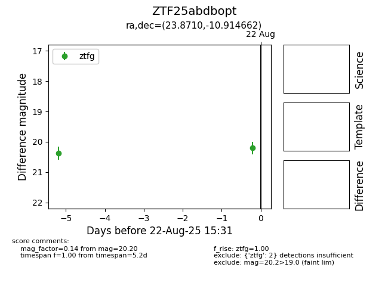

Target ZTF25abdbopt at 2025-08-22 15:31, see:
FINK: fink-portal.org/ZTF25abdbopt
Lasair: lasair-ztf.lsst.ac.uk/objects/ZTF25abdbopt
ALeRCE: alerce.online/object/ZTF25abdbopt
alt names
ZTF25abdbopt (ztf,alerce)
coordinates:
equatorial (ra, dec) = (23.8710,-10.91466)
galactic (l, b) = (157.6202,-70.75856)
photometry
last ztfg=20.20
2 ztfg detections
